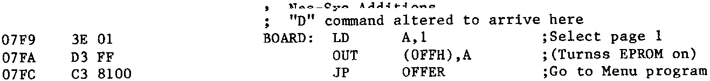

INMC 80 News |
May–September 1981 · Issue 4 |
| Page 44 of 71 |
|---|
The code I added to Nas-Sys is shown below. Its purpose is to page the EPROM board back in and jump to the second control routine. This second routine displays a menu on the screen of what is available on the EPROM board. Typing the appropriate number or letter on the keyboard results in the contents of an on-board ROM(s) being copied to its execution address in RAM, the transfer being done in an identical manner to the down loading of Nas-Sys shown above. Note that the EPROM board is Read only, and that any overlaid RAM is not disabled if a write cycle is executed. This means that the EPROM can be copied to anywhere in RAM, even to the same address as the EPROM!
With this set up it only takes me three key depressions (D <enter> 8) and my 8″ ‘EPROM’ is loaded (at a rate equivalent to about 1.5Mbaud!) and CP/M boots in in under a second with no hassle at all! Alternatively D <enter> H for the Henelec disk system, or D <Enter> D for Debug & Nas-Dis, or........
Using this technique you can also hold RAM based routines that you frequently use that will not run in EPROM, or small utilities that you use frequently (but not together) can all execute at the same address… It’s up to you what you do. If 32K is not enough you can always buy another EPROM board for page 2...... (Anyone seen what’s on page 3? – ED).
“… I also found the 9 column listing offputting when trying to check through for errors in entry as, of course, my Nascom tabs in eight columns.”
Name and address withheld to protect the guilty. (Hint – read the back issues!!)
| Page 44 of 71 |
|---|